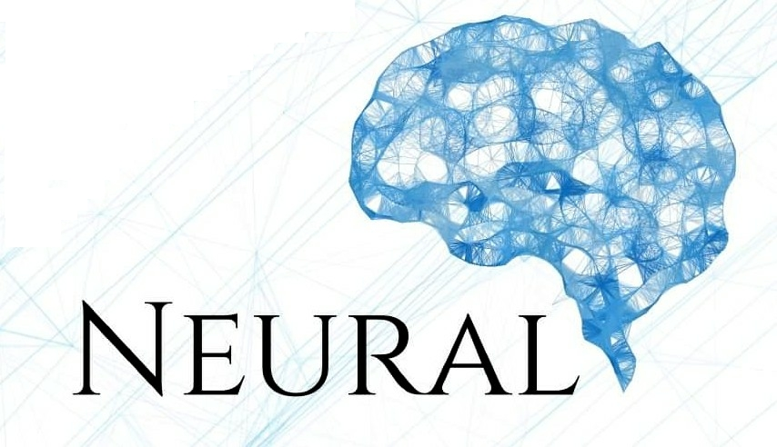

About
I'm an ELLIS PhD Student at the University of Copenhagen, advised by Prof & Director Serge Belongie.
Additionally I'm also part of the Pioneer Centre for Artificial Intelligence and BelongieLab.
Before starting my PhD, I was a visiting student at UC Berkeley and a research intern at BAIR, where I was fortunate to work with Xinyun Chen in Dawn Song's group.
I received my Bachelor's and Master's degrees from the Technical University of Denmark DTU (DTU), where I worked with Prof. Ole Winther Winther and Prof. Morten Mørup.
I've also previously been a research intern at Amazon during the fall of 2023 in Seattle working with their visual intelligence team to improve the shopping experience at Amazon, the resulting article is published in ACVC and model is in production.
During my Masters I interning at Raffle.ai and worked a Machine Learning Engineer at Corti.
Research Interest
I am broadly interested in Human Computer Interaction, Natural Language Processing and Computer Vision, but more specifically my research deals with on narratives, deep fakes, misinformation and memes
peter_ebert@live.dk
GitHub
LinkedIn
Resume
Publications
{% for publication in site.posts %}
{% if publication.type == "paper" %}
{% if publication.image %}

{% else %}

{% endif %}
{{ publication.title }}
{{ publication.author }}
{{ publication.journal }}, {{ publication.year }}
{% if publication.pdf %}
PDF
{% endif %}
{% if publication.link %}
Abstract
{% endif %}
{% if publication.bibtex %}
Bibtex
{% endif %}
{% if publication.code %}
Code
{% endif %}
{% if publication.website %}
Website
{% endif %}
{% if publication.blog %}
Blog
{% endif %}
Internships
Below you can find a list over Internships I've been doing so far

Research Internship at Amazon.com
Applied scientist Intern, turn photos from from third party sellers into professional looking ones using SOTA Segmentation, Matting and image generation models.
Fall, 2023
Website
Teaching and talks
Below you can find some of the material I used for courses and workshops where I have teached.

DTU course 02456 Deep learning
Programming Exercises (PyTorch) for the Deep Learning Graduate Course at the Technical University of Denmark running in the Fall of 2019, 2020 and 2021
Code

Neural AI
Explaining Reinforcement Learning for more than 200 people at the Technical University of Denmark during a Neural AI event
Code